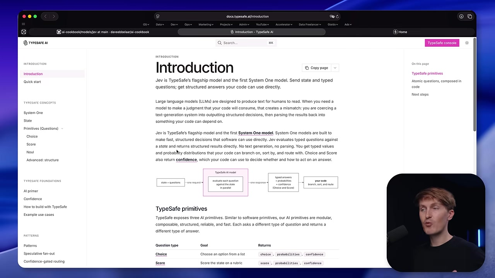
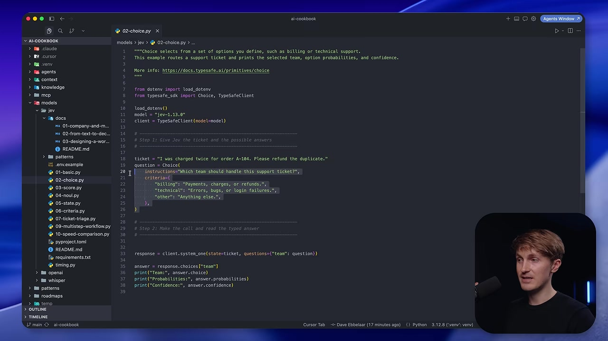
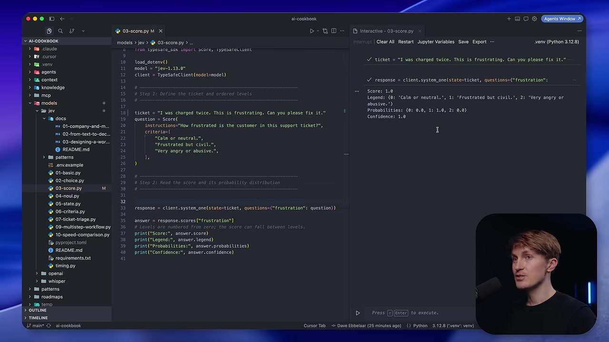
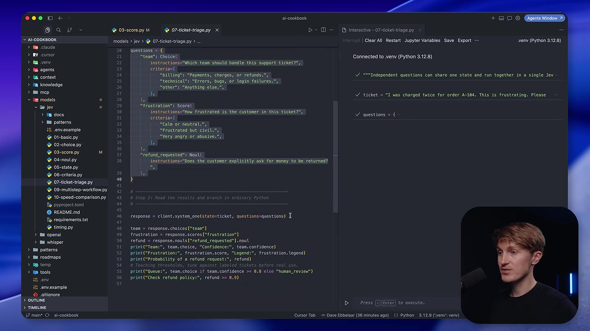
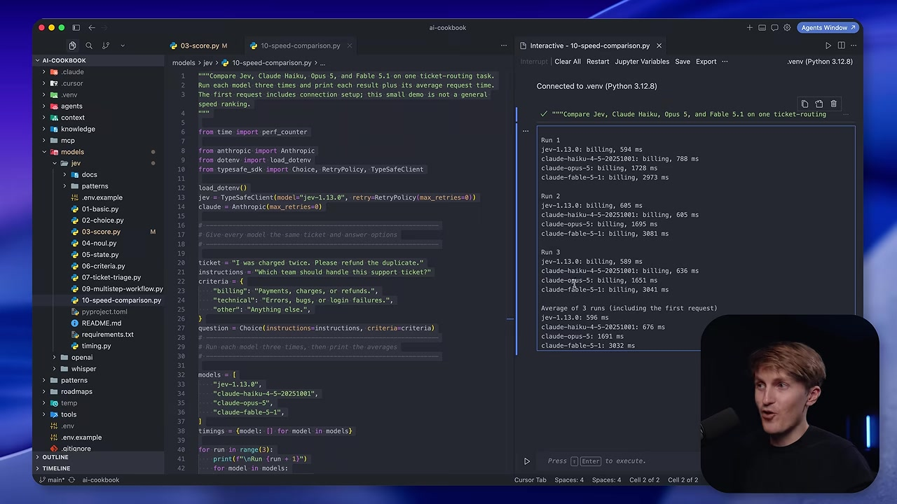

Executive summary
The model is a judgment primitive, not a prose generator
Dave Ebbelaar's central argument is that many application tasks do not need a general-purpose model to write text. They need a fast, bounded judgment that software can consume: which team owns a ticket, how severe a complaint appears, or whether a refund was explicitly requested. TypeSafe's Jev model is designed for this narrower job.
The programming model is simple. Send a state containing the text or structured record to inspect, then attach one or more typed questions. Jev returns fixed values and probability distributions rather than free-form prose. Your Python code applies thresholds, business rules, tool calls, and side effects.
Let the model perform fuzzy perception. Keep policy, arithmetic, orchestration, and irreversible actions in deterministic code.
- Choice selects one label from options you define.
- Score places the state on an ordered rubric and may return a value between levels.
- Noul returns the probability that a yes-or-no statement is true.
- Independent questions can share one state and run together in a single request.
- Typed output prevents schema drift, but it does not guarantee a semantically correct judgment.
The contract
State in, typed questions in, decisions out
A normal language model is optimized to continue text. Even when prompted for JSON, the application is still asking a generator to imitate a software interface. Jev reverses the emphasis: the API itself is a decision interface. The caller defines the available answer shape before inference begins.

This separation is more important than the SDK syntax. A model should not be asked to both infer what happened and invent the company's policy. It can classify the ticket; code decides whether that classification is confident enough to trigger an automated path.
Three primitives
Match the question type to the answer your code needs
Which option? Returns a selected label, probabilities, and confidence.
Where on a rubric? Returns a numeric position, legend, distribution, and confidence.
Is this true? Returns a probability from 0 to 1, with no separate confidence field.
Choice: route to a known branch
A Choice question supplies every legal option and a description of
what each means. In the demo, Jev routes a duplicate-charge ticket
to billing, technical, or
other. The response cannot invent a fourth team. This
makes Choice a natural fit for queues, document types, languages,
workflow states, and tool selection.

Score: evaluate an ordered spectrum
Score is for concepts that have meaningful order: frustration, urgency, severity, or skill. Developers define descriptive levels, and the result can sit between them. That is different from Choice, whose labels are categorical and unordered.

Noul: treat yes/no as a probability
Noul answers a binary proposition such as “Does the customer explicitly request money back?” A value near 1 is strong support, near 0 is strong rejection, and near 0.5 is uncertainty. It is not a severity scale. If the business question is “how angry?”, use Score; if it is “does this contain an explicit threat?”, Noul is a better match.
Python pattern
Compose judgments in one request, then branch in code
Questions that inspect the same state can be sent together. In the ticket example, routing, frustration, and refund intent are independent judgments. Jev evaluates them in parallel and returns each answer under the ID chosen by the developer.
questions = {
"team": Choice(
instructions="Which team should handle this ticket?",
criteria={"billing": "Charges or refunds", "technical": "Bugs"},
),
"frustration": Score(
instructions="How frustrated is the customer?",
criteria=["Calm", "Frustrated", "Abusive"],
),
"refund_requested": Noul(
instructions="Does the customer explicitly request money back?",
),
}
response = client.system_one(state=ticket, questions=questions)
team = response.choices["team"]
queue = team.choice if team.confidence >= 0.8 else "human_review"
Parallel does not mean dependent. If the second judgment requires evidence discovered by the first, use two calls: classify the required lookup, fetch the evidence in Python, then send an enriched state for the follow-up judgment. That keeps tool execution and data dependencies visible in ordinary code.
Confidence and control
A confidence value is a routing signal, not a certificate
Choice and Score expose both a distribution and a summarized confidence value. This gives the application more options than a hard label: auto-route highly confident tickets, send ambiguous ones to human review, and log the uncertain band for later evals.
The essential caveat is calibration. A calibrated model should be right roughly 80 percent of the time across a sufficiently large set of predictions made at 0.8 confidence. That does not mean a particular 0.8 answer is guaranteed to be correct. Thresholds must be tuned on representative, labeled business data and reconsidered whenever the model version or input distribution changes.
Jev can always return a value that matches the schema and still misunderstand the ticket. Structural reliability removes parsing failures; it does not remove semantic errors.
Speed and price
The demo is promising, but it is not a benchmark
Ebbelaar runs the same small ticket-routing task three times through Jev and several Claude models. In this recording, Jev averages 596 ms, Haiku 676 ms, Opus 1,691 ms, and Fable 3,032 ms. Those are end-to-end request times from one machine for one task, including the first connection. There are no warm-up runs, statistical error bars, retries, or broad task suite.

The pricing example is easier to reproduce. TypeSafe's model page lists Jev 1.13 at $0.042 per million input tokens with free output tokens. At exactly 100,000 requests and 500 input tokens each, that arithmetic is $2.10. The video's rounded “about $2 versus $50 for Haiku” illustrates a large difference for this input-only workload, but it is not a universal per-task saving. Tokenization, output length, caching, quality requirements, and alternative models all change the comparison.
Where it fits
Use Jev for narrow perception, not open-ended cognition
| Good fit | Poor fit |
|---|---|
| Routing and intent classification | Writing an email or explanation |
| Scoring against a clear rubric | Long, multi-step reasoning |
| Binary policy checks with explicit wording | Precise arithmetic or date comparison |
| Ranking and confidence-gated automation | Image, audio, or video input |
| Many independent judgments on one state | Tasks with hidden or changing answer options |
TypeSafe's own jaggedness notes are unusually useful here. Jev 1.13 may read instructions literally, struggle with arithmetic and date comparisons, lose accuracy when the state is full of irrelevant material, and fail on adversarial content or multiple levels of indirection. The remedies are architectural: reduce the state, point directly to the relevant fields, ask atomic questions, and enforce calculations and invariants in code.
Jev is also text-only, with English as its strongest language. Non-English workloads need their own evaluation set. The direct API is a hosted dependency; Ebbelaar's hope for small self-hosted models is a future possibility, not a deployment option demonstrated in this video.
Implementation playbook
How to introduce a typed decision model safely
- Choose one bounded judgment. Start with a route, rubric, or yes/no condition whose business meaning is already understood.
- Define the output before the prompt. Write the legal Choice options, Score levels, or Noul condition and include boundary cases.
- Build a labeled test set. Include ordinary cases, ambiguity, negation, adversarial wording, and examples near every automation threshold.
- Log distributions and model versions. A label alone hides uncertainty and makes regressions harder to diagnose.
- Gate actions by risk. A low-risk tag can use a lower threshold than a refund, account suspension, or external side effect.
- Keep deterministic work deterministic. Fetch records, compare dates, calculate money, and enforce policy in code.
- Re-evaluate after change. Pin the model version when thresholds matter, then rerun the dataset before upgrading.
Verdict
The compelling idea is the boundary, not the model name
Jev offers a clean answer to a common design mistake: using a generative model for every intelligent decision. Its typed primitives make application intent explicit, expose uncertainty, and encourage developers to compose decisions in code. That is a healthier architecture than burying routing, policy, and action in one large prompt.
The trade-off is specialization. Jev is useful precisely because it cannot do everything. Teams still need generative models for writing and deep reasoning, deterministic systems for exact rules, and humans for uncertain or high-consequence cases. The strongest production design is not Jev instead of those components. It is Jev placed deliberately between them as a fast, inspectable decision layer.
Video map
Timeline
Jev and the first Python request
Why typed decisions differ from generated text.
Choice, Score, and Noul
The three primitives and their response shapes.
Speed and cost
A small latency demo and a pricing illustration.
One request, many questions
Combining independent judgments over shared state.
Verdict and deployment outlook
Where specialized decision models may fit in agent systems.
Sources and method
What this article is based on
- Dave Ebbelaar, Jev Explained for Python Developers. Complete caption track checked against the 16:50 video; frames captured from the source.
- TypeSafe Introduction, Primitives, Models and pricing, and Jev 1.13 jaggedness. Official documentation checked September 23, 2026.
- Dave Ebbelaar's Jev examples. Python examples for Choice, Score, Noul, combined triage, dependent workflows, and the latency demo.
Product behavior, pricing, and limits can change. Vendor claims are identified as such; the architecture guidance and production cautions are editorial synthesis based on the cited sources.